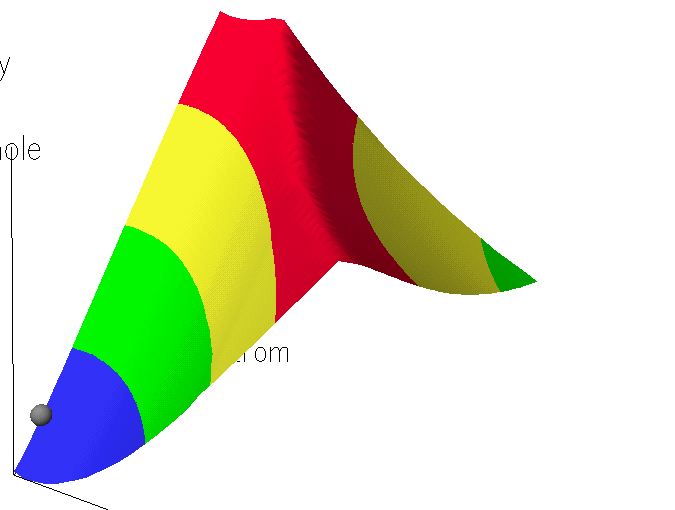

The method used is AM1, although other methods could, of course, be used. The calculations described here do not depend on the method used.
Ethylene and hydrogen chloride form distinct species separated by a
large distance.
The H-Cl distance is 1.283 Angstroms. DHf
C2H4: +16.45 Kcal/mol; DHf
HCl: -24.61 Kcal/mol; DHf C2H4
+ HCl: -8.19 Kcal/mol
The H -- Cl distance has increased to 1.630 Angstroms,
the H -- C distance is 1.424 A, and the Cl -- C distance is 2.268 Angstroms.
DHf: +34.84 Kcal/mol.
In Chloroethylene, the C-H distance is 1.117 Angstroms, the C-Cl distance is
1.758 A,
and the H -- Cl distance is 2.932A. DHf
C2H5Cl: -26.19 Kcal/mol.
Use of a GRID to generate the transition state:
An obvious, and incorrect, way to find the transition state would be to generate the potential energy surface map in which one direction represented the C -- H stretch and the other represented the C -- Cl stretch. In this map, the C - H distance is varied from 1.1 to 1.7 A, and the C - Cl distance is varied from 2.0 to 2.6 Angstroms. The resulting map shows an obviously incorrect structure in the region of the transition state, in that the ridge is quite sharp.. Examination of the geometries in the region of the transition state showed that two distinct types of structure: (a) a product-like structure in which the H -- Cl distance was large, and (b) a reactant-like structure, in which the H -- Cl distance was small. At no point was the H -- Cl distance similar to that in the transition state. The conclusion to be drawn was that the map did not include geometries related to the transition state, despite the fact that geometries intermediate between reactants and transition state, and geometries intermediate between transition state and product were generated.
However, by using these intermediate geometries, one from each side of the transition state, a SADDLE calculation can be run, to generate a good approximation to the transition state. This can then be further refined using TS, and finally the transition state could be characterized using FORCE.
Here, the starting points for the SADDLE calculation were obtained from the output from the GRID or map calculation. If such a calculation had not been done, the SADDLE calculation could have been started using the reactants and products only. The difference would have been that the SADDLE calculation would have taken longer to run.
Note that in the Markovnikov reaction, the first step is addition of Cl(.) to C2H4, followed by addition of HCl to the resulting C2H4Cl. This gives rise to the product, CH3CH2Cl + Cl(.).
The files used in these calculation can be found in the ZIP file.